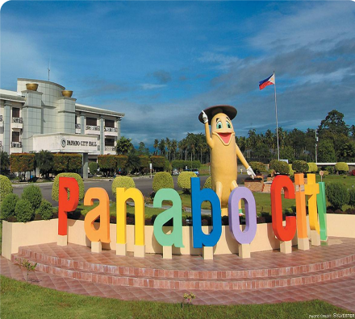
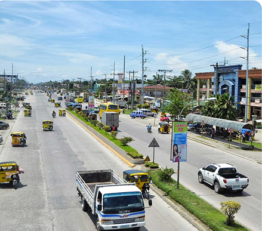
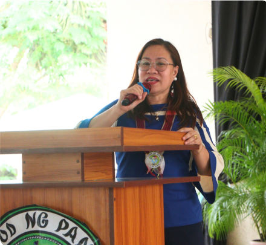
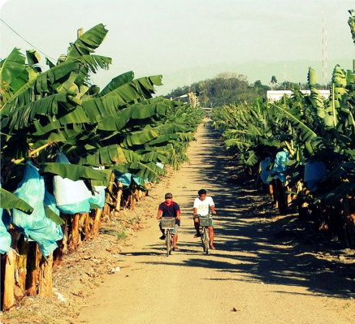

CITY OF PANABO
The Banana Capital’s Golden Charm
Panabo City, often hailed as the “Banana Capital of the Philippines,” is a thriving agricultural hub in Davao del Norte. With its expansive plantations supplying bananas to both local and international markets, Panabo has built a name for itself in global agriculture. Beyond bananas, it boasts developing urban amenities, scenic rural landscapes, and a hospitable community, making it a must-visit destination for travelers curious about Mindanao’s agricultural backbone.

Geography & Area
Fertile Grounds, Endless Horizons
Panabo covers around 251 square kilometers of fertile lowlands and rolling hills. The city’s terrain is ideal for large-scale banana cultivation, supported by well-irrigated farmlands and a tropical climate. Bordering municipalities connect Panabo to both inland provinces and the Davao Gulf, facilitating easy exchange of goods and tourism traffic.

Brief History
From Farming Roots to City Heights
Originally part of Tagum (then called Magugpo), Panabo’s rich soil and favorable conditions lured settlers focused on farming. Over the decades, the region gained recognition for its prosperous banana plantations. Declared a municipality in 1949, Panabo officially became a city in 2001, accelerating growth in commerce, real estate, and public infrastructure.

Demographics & Language
A Cultural Patchwork of Voices
A majority of Panabo’s residents speak Cebuano (Bisaya), with Tagalog and English widely understood, especially in schools, government offices, and businesses. The city’s population comprises migrant families from nearby Visayan provinces and indigenous communities, lending a blend of traditions to Panabo’s cultural life.

Climate & Environment
Tropical Bliss Meets Sustainable Progress
Panabo enjoys a tropical climate with steady rainfall throughout the year, ensuring lush crops and consistently high yields. The city encourages sustainable farming practices—particularly to maintain soil fertility and protect water resources. Local ordinances often support reforestation and responsible waste management, balancing economic development with environmental care.
Reference: davaodelnorte-panabo-city